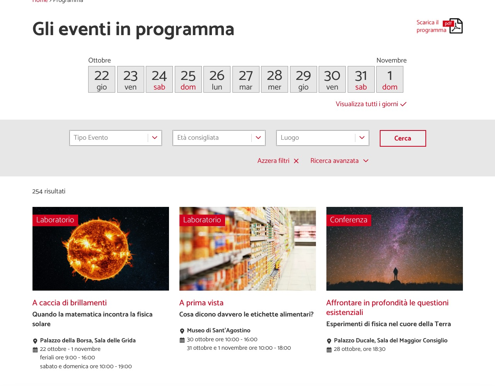
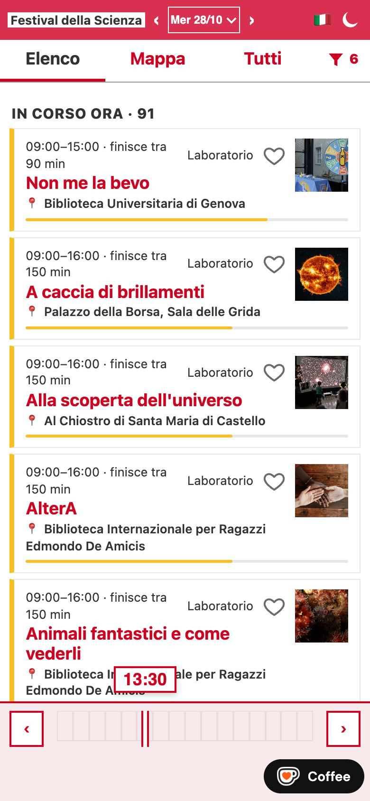

Festival della Scienza, quick view
An unofficial app for the Festival della Scienza in Genoa. The official programme was hard to scan quickly: it was difficult to see what was happening now, and to keep track of the events I liked. This version lists what is on now and soon, and lets you filter events and save favourites.
It spread by word of mouth and is used by about 140 people. Open the app.


